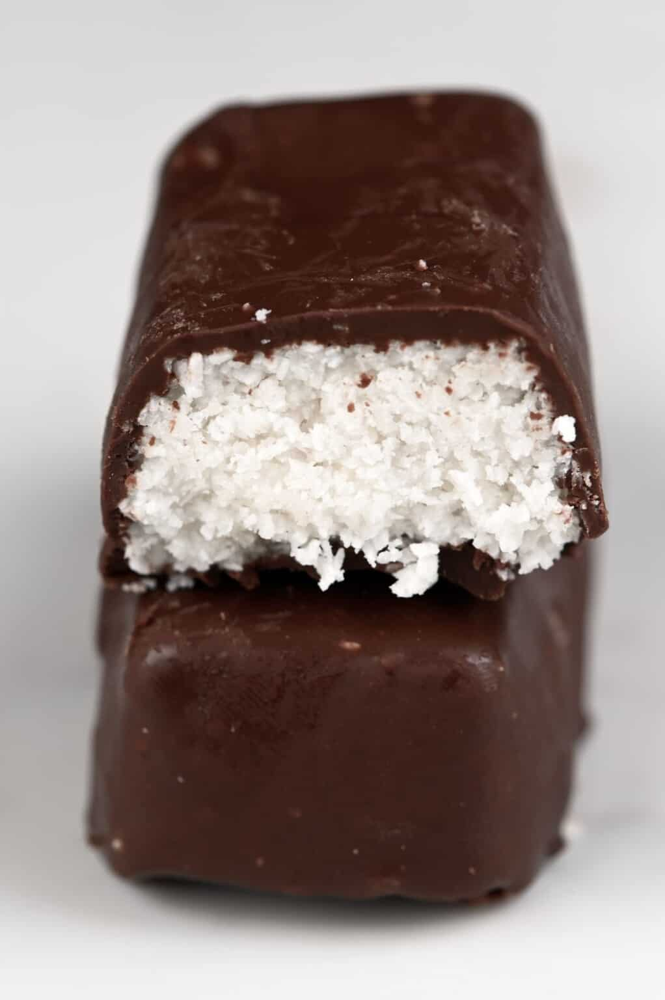

Coconut Bars

Vegan Coconut Bars
This DELICIOUS, EASY, and QUICK coconut bars are a must try!!! With only 20 minutes preparation time these beauties are going to become your number one snack of choice.
Ingredients:
- 5 Dl Shreaded Coconut
- 2 Dl Coconut Cream
- 4 Tbs Raw Honey
- Pinch of Salt
- 2 Dl Coconut Oil
- 9 Tbs Cacao
- 1 Dl Maple Syrup
- 1 Dl Shaved Coconut
Preaparation:
- In the food processor add Shreaded Coconut and run until sticky.
- Add in the food processor Coconut Cream, Raw Honey and Salt and continue mixing until well combined.
- Take the mixture out of the food processor and clean it.
- Cover the cake form with baking paper and pour in the prepared mixture.
- Put it in the freezer for 15 minutes.
- When ready, cut it in rectangular pieces.
- In the clean food processor put Coconut Oil, Cacao and Maple syrup and run until well mixed (should take 30 seconds ;)).
- Dip the frozen pieces in the chockolate sauce and sprinkle them with the Coconut Flakes.
- If the pieces are cold enough you can eat them straight away, and if they are not, just pop them back into the freezer for few minutes.
ENJOY!
Return to the main page